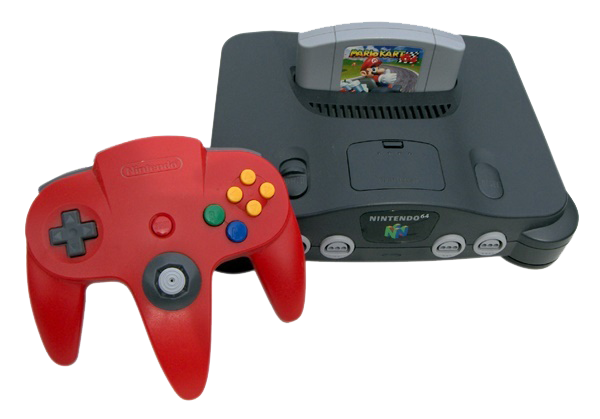

Nitendo 64
R$700
O Nintendo 64 ficou conhecido por ser um console que oferecia a melhor experiência multiplayer, graças a sua capacidade
de aceitar 4 controles simultâneos sem ajuda de acessório, e também por dominar nos gêneros de corrida, como jogos
como San Francisco Rush, Extreme-G e Mario Kart 64, aventura 3D, como títulos como Super Mario 64 e Banjo Kazooie,
e FPS, pois contava com títulos como Goldeneye 007 e Perfect Dark, além de versões superiores de jogos como Quake 2,
que eram comparáveis as versões para PC.